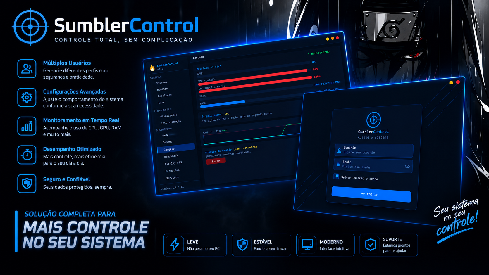

SumblerControl analisa, otimiza e monitora seu PC em tempo real. Identifica o que está travando sua performance, aplica tweaks de sistema comprovados e entrega os FPS que seu hardware sempre teve capacidade de dar.

O Windows, por padrão, não é otimizado para gaming. Serviços desnecessários consomem CPU e RAM, o timer do sistema opera em 15ms, USB suspend aumenta o input lag e nenhuma ferramenta nativa te diz qual componente está te limitando.
Uma ferramenta profissional que diagnostica, otimiza e monitora. Você vê exatamente o que está acontecendo com seu hardware e aplica as correções certas — sem precisar entender de registro do Windows ou linha de comando.
Cada funcionalidade foi desenvolvida para resolver um problema real de performance — não são tweaks genéricos da internet.
Monitora CPU, GPU, RAM e VRAM simultaneamente e identifica automaticamente qual componente está limitando seus FPS — com gráfico ao vivo e alertas de uso crítico.
Timer Resolution de 0.5ms, USB selective suspend desativado e aceleração do mouse removida. Resposta do sistema medida em microssegundos, não milissegundos.
Overlay sempre visível com FPS, frametime e gráfico de histórico — filtrável por processo. Leve, sem impacto na performance do jogo.
GameMode, GPU Priority, HAGS, MSI Interrupts, IRQ Affinity, Large System Cache, Power Plan Gamer e muito mais — cada toggle explicado com o que faz e o impacto esperado.
CPU com raytracer multi-thread, RAM com teste de latência e largura de banda, e Disco com leitura/escrita de 512MB sem cache — com histórico de resultados comparativos.
65+ serviços do Windows categorizados por risco — verde (seguro desativar), amarelo (cuidado) e vermelho (não mexa). Libera RAM e CPU com segurança.
Gráfico de frametime em tempo real com análise de consistência. Identifica stutters, spikes e quedas de performance que o contador de FPS simples não mostra.
Ping, jitter e packet loss medidos com precisão. Identifica instabilidades de conexão que causam lag em jogos online — com recomendações de correção.
Temperatura, horas de uso, setores realocados e indicadores S.M.A.R.T. para HDDs e SSDs — NVMe e SATA. Previne perda de dados antes que aconteça.
Pagamento via PIX, cartão ou boleto. Recebe o instalador por e-mail imediatamente após a confirmação. Instalação em menos de 1 minuto.
Execute a análise de gargalo e o benchmark completo. Em minutos você sabe exatamente o que está limitando seu hardware e quanto performance está perdendo.
Ative os tweaks recomendados, desative os serviços desnecessários e reduza o input lag. Resultado imediato — mais FPS, frametime mais estável, sistema mais rápido.
Painel completo em português, desenvolvido para ser rápido e direto ao ponto.
13 abas organizadas — Sistema, Monitor, Otimizações, Benchmark, Gargalo, Overlay FPS, Frametime, Rede, Disco, Serviços e mais. Tudo em uma janela compacta e rápida.
Sem funcionalidades bloqueadas. Sem versão "lite". Tudo disponível desde o primeiro dia.
Cancele a qualquer momento · Sem fidelidade
Depende do seu sistema. Em PCs com serviços desnecessários ativos, timer em 15ms e configurações padrão do Windows, o ganho é visível — mais FPS, frametime mais estável e input lag reduzido. O benchmark mostra os números antes e depois.
Sim. Compatível com Windows 10 (1903+) e Windows 11 em todas as versões, incluindo 22H2, 23H2 e 24H2. As otimizações são adaptadas automaticamente para cada versão.
Após a confirmação do pagamento você recebe automaticamente por e-mail o link de download e suas credenciais de acesso. O processo é instantâneo.
Sim. Cada toggle pode ser desativado individualmente a qualquer momento. O SumblerControl também cria um ponto de restauração do sistema antes de aplicar mudanças críticas.
Sim. Sem fidelidade, sem multa. Cancele diretamente pela plataforma de pagamento quando quiser.
Alguns antivírus podem gerar falso positivo em ferramentas que acessam registros do sistema e APIs de baixo nível — comportamento normal para softwares de otimização. O aplicativo é seguro. Recomendamos adicionar uma exceção no antivírus após o download.
Junte-se aos gamers que já desbloquearam a performance real do seu PC.
Assinar por R$ 31,99/mês